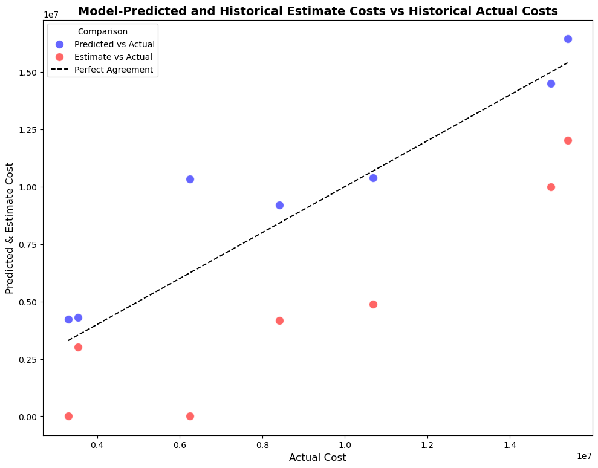
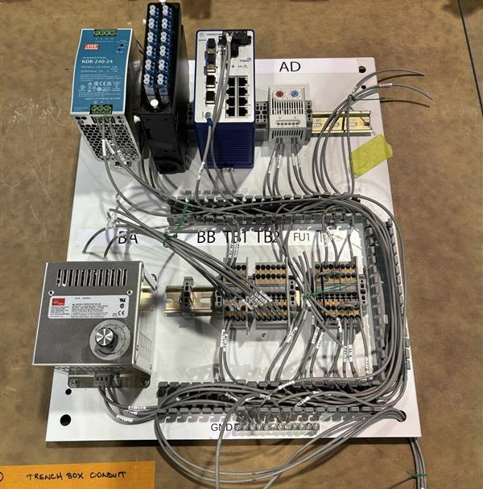
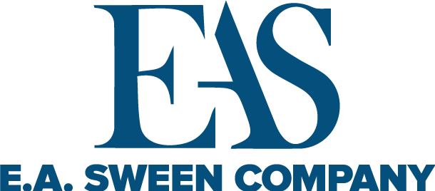
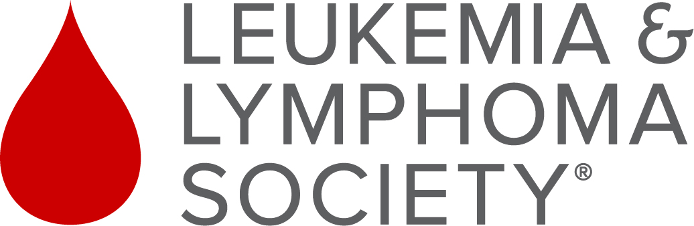

Work Experience
Mortenson Construction
Data Analytics Intern, May 2024 - Present
Project Cost Prediction Application
Developed a cost prediction application combining Python for backend model integration and HTML for the user interface, designed to improve the accuracy of future project cost estimates through advanced regression techniques, synthetic data, and feature engineering.
Key Contributions:
- Model Development in Python: Developed 23 regression models in Python, each optimized for its assigned task. Models included advanced regressors such as Stacking Regressors (leveraging ensemble methods), Gradient Boosting, Ridge Regression, Random Forest, and K-Nearest Neighbors. Each model was evaluated using train-test splits and cross-validation to determine the optimal combination of regressors and features.
- Synthetic Data Integration: Generated and incorporated synthetic data to improve the generalization and robustness of the models, particularly for underrepresented scenarios.
- Feature Engineering: Engineered domain-specific features to improve cost comparability across diverse project configurations. This resulted in enhanced model performance, including improved R², MAE, and MSE scores.
- Application Integration: Serialized 23 task-specific models into .pkl files, integrating them into a unified application with a Python backend and an HTML-based user interface. Each model uses its optimal features to generate precise predictions, while the centralized application provides seamless input handling and accurate cost estimation.
- Deployment via Azure DevOps: Deployed the finalized application and models to a live production environment through Azure DevOps.
This visualization demonstrates the performance of a specific task's model, achieving an R² score of 0.86 and outperforming historical estimates 85.7% of the time. It compares the predicted costs (model output) with historical estimates and actual project costs:
Internal Marketplace Development
Designed and deployed platform for trading and selling supplies internally, automating workflows with Power Automate to streamline submission processing and notifications.
Key Contributions:
- Workflow Automation: Built a Power Automate flow to manage user submissions, dynamically handle photo uploads, generate unique post IDs, and store images in a shared internal folder.
- Data Integration: Connected Microsoft Forms, Excel storage, and Viva Engage to enable structured data handling and automated community email notifications.
- Flow Complexity: Utilized JSON parsing, loops, and conditional logic to process files, append them to arrays, and compose messages for Viva Engage posts.
Field Network Enclosure Cabinet Circuit Wiring
Interpreted circuit drawings to assemble and wire electrical boards for FNE cabinets, ensuring the components met functionality requirements for deployment on project sites.
E.A. Sween Company
Continuous Improvement Specialist, Septemeber 2023 - May 2024
Continuous Improvement Analytics Intern, June 2023 - Septemeber 2023
Automated Mass Balance System
Developed an automated mass balance system in Excel to visualize the flow of materials during production and facilitate data analysis. The system outputs a data frame comparing collected scrap data to the Bill of Materials (BOM), enabling accurate evaluation of BOM accuracy, identification of variances, cost irregularities, and waste performance.
Key Contributions:
- Visualization: Created R-based visualizations to improve the interpretation and communication of mass balance metrics.
- Advanced Analytics: Analyzed mass balance data using Minitab and Tableau, applying statistical metrics such as mean squared error and R² to assess trends and identify improvement opportunities..
Manufacturing Equipment Optimization
Contributed to reducing raw material waste by designing a straining tool using Shapr3D software. Piloted and implemented the tool into production, achieving a 5% reduction in scrap for a specific product.
Packaging Film Thickness Optimization
Utilized Optech-O2 software to analyze and determine the optimal packaging film thickness, contributing to the standardization of manufacturing materials and improving process efficiency.
Stranded on State
Head of Technology, Jan 2024 - Present
Manage and update the startup's GitHub-based website, utilizing both frontend and backend development to maintain and enhance functionality.


The Leukemia & Lymphoma Society
Campaign Manager, Dec 2019 - Feb 2020
Ran the campaign for the 2020 Students of the Year Program, a philanthropic leadership initiative. Organized 7 community fundraisers, raising $27,000 in 3 months. Awarded the 2020 Minnesota, North Dakota & South Dakota Citizenship Engagement Scholarship for outstanding results.